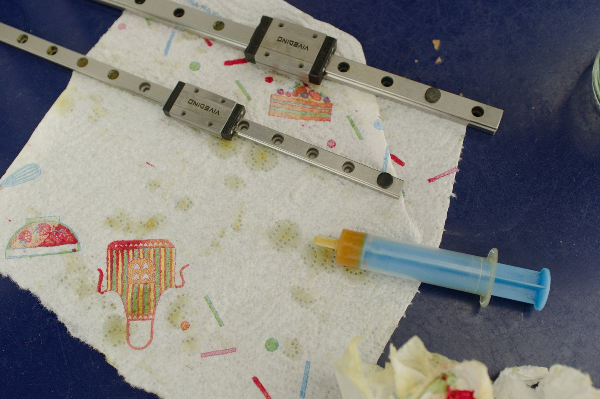
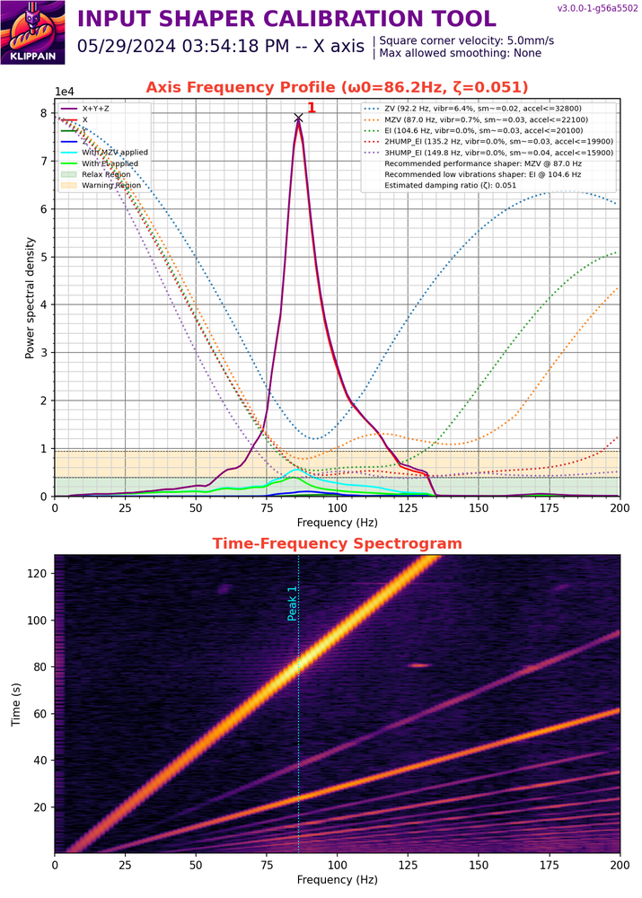
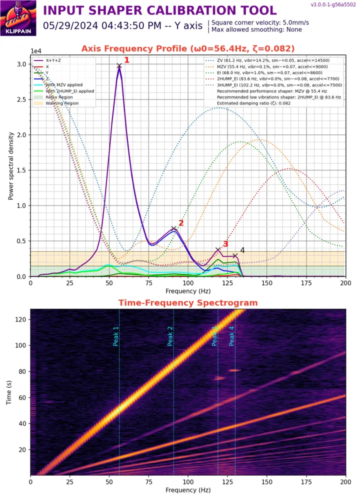

Building a spaceship 3D printer from scratch - the Voron Trident
I decided to challenge my skills and build something really complex and great. A machine that is essentially a small factory that can produce physical objects in a very short amount of time. After doing a lot of research on the internet, I stumbled upon the Voron 3D printer. It struck me as a remarkably well thought-out project, with a large and active community.
The Voron design offers a few types of printers, the most well-known is probably the v2.4 model. I went with the Trident, drawn by the idea of fixed gantry which could in theory allow greater maximum acceleration (I really liked looking at videos of very fast printers and wanted to achieve something similar).
Hardware
I selected the kit from company Formbot which seemed to offer the best quality/price ratio. The printer was shipped from the Czech warehouse and it took around one week.
The kit was very nicely packaged, nothing was damaged during shipping. The stepper motors are from the brand MOONS, which is known for its good quality. The extrusions are pre-drilled and threaded, and the ends are painted black, which is a nice touch. The kit contains everything you need to build the printer, but it would not be me if I hadn't also decided on some additional mods for which I needed to obtain the parts separately:
- DragonBurner toolhead - much lighter than the stock toolhead (also looks way cooler in my opinion)
- Sherpa Mini extruder - lightweight extruder compatibile with the DragonBurner toolhead
- BambuLab hotend - great price to performance ratio
- Klicky Probe - a probe that magnetically ataches to the toolhead when needed and stored away during the print
- EBB 36 CAN board - the toolhead is connected to the main board using just 4 cables
- Symmetrical Beefy Front Idlers - alternative front idlers which offer higher durability
- Annex Enginnering panel clips - I prefer the look of these
Printed parts
The kit does not include the 3D printed parts. I printed mine on a Prusa MK3S+ in a local hacker space. For the filament, I used the Prusa ASA Galaxy black, which looks very cool, together with some random off-white ABS. The parts came out looking very nice.
Frame assembly
I started the build with the smaller sub-assemblies for the gantry. This part was quite fast and not very difficult.
Following was probably the most challenging part — building the frame. It took several hours and I rebuilt the whole thing 3 or 4 times to achieve the precision that I was satisfied with. I built the frame on top of a glass surface and used a machinist square to help with the accuracy. A good tip I saw online was to measure the diagonals of the frame (they should be equal within 1 millimeter) to ensure the frame's squareness.
The next part was bathing the linear rails in isopropyl alcohol and lubricating them. The process is a bit messy and requires some patience. Most importantly, you need to be careful not to let the carriage slide off the rail, as it is near impossible to reassemble.

When the rails are lubricated, they can be mounted to the frame. Next comes the installation of the belts. It is highly recommended to cut both belts to exactly the same length. The only way to ensure this is to count each individual ridge and match them. It makes the process of adjusting the tension much simpler. An alternative method is to use a guitar tuner and "tune" the belts to a matching frequency. It is now finally starting to look like a printer.
Electronics
The electronics part is probably the most dangerous, as the Voron uses AC to power the heated bed. Always triple check everything with a multimeter! The kit comes with an AC splitter — one part goes to the DC power supply and the second to the relay, which is used for the bed.
Toolhead
The toolhead assembly was the most enjoyable part of the whole build for me. I decided to use the EBB36 CAN board to simplify the wiring — everything on the toolhead connects to the board, and the board is connected to the main board using only four wires (24V, Ground, CAN High, CAN Low). As the hot end I chose the Bambu Lab hotend clone, which offers unbelievable performance for the price. The hard part was crimping the connectors for every single cable and even making a few custom ones (for example for the LEDs), but at least I learned something new. I think the result is really great and I'm very happy with it.
First prints
Putting it all together, it was time for a first test. The first homing was very scary — I recommend setting the speed as slow as possible and being ready to hit the emergency stop at all times. It proved useful in my case, as I had set the Z offset in the wrong direction, which almost caused the bed to crash into the toolhead. After the initial setup of the Z offset and the max distances, I ran a first print. It was very bad, mainly due to the lack of any tuning.
Tuning
The tuning process is very time consuming and is composed of many steps. I found a great site that describes this process very well — Ellis' Print Tuning Guide. Below, you can see the difference between the first print without any tuning, and the same model printed after tuning. The difference is pretty obvious.
Gantry squareness, bed leveling
The Trident has a fixed gantry compared to the v2.4, therefore it is much simpler to square. To check it, I measured the diagonals and double-checked with a machinist square. The next thing I measured was the flatness of the bed using a Klipper firmware feature. This process can also reveal some problems with the build. Luckily, I got a very above-average result, which made me very happy.
Extruder, first layer, pressure advance
The extruder calibration ensures that the extruder motor pushes out the correct amount of filament for each command sent from the slicer software — this is crucial for achieving accurate prints. The calibration process involves extruding a set length of filament, measuring the actual distance extruded, and multiplying the rotation distance parameter:
<new_rotation_distance> = <previous_rotation_distance> * ( <actual_extrude_distance> / 100 )
I recommend using tape to mark the distance on the filament and measuring with calipers to be as precise as possible.
The first layer setup is a less deterministic process and mostly relies on visual observation — this makes it quite easy as you don't need to be very precise. A good first layer prevents warping, lifting, or failed prints.
The last, and for me the most time consuming, process was the pressure advance calibration. Pressure advance improves print quality by compensating for the pressure buildup in the hotend during acceleration and deceleration. It's especially useful for faster printers, where speed changes can cause oozing (excess filament leaking out) at corners.
For this purpose, there is a very handy calibration tool that generates a g-code file with different pressure advance values, allowing you to select the sharpest looking corner. It is important to use the same acceleration as you intend to use during normal printing.
Input shaping
Input shaping in 3D printing is an advanced tuning technique used to reduce vibrations and resonances in your printer, which cause "ringing" or "ghosting" artifacts — those unwanted echoes or ripples on printed surfaces, especially at high speeds or accelerations.
To identify the printer's resonant frequencies, I used the Shake&Tune Klipper plugin. The EBB36 has an onboard accelerometer which was used for these measurements. After some belt tension adjustment, I think I got some good results:


To achieve the highest possible accelerations, it is important to:
- Minimize the moving mass (e.g., lightweight toolhead and carriage)
- Precisely match belt tension between both belts
- Ensure a rigid frame and high-quality linear rails
- Use powerful stepper motors
Tuning summary
Overall, the time spent on tuning was at least equal to the time spent on the build itself. It involved a lot of troubleshooting to achieve desirable results, but in the end it was really worth it.
Panels + extras
For the panel clips, I found an alternative that I liked better than the stock ones — the Annex Engineering panel clips.
I bought an extra roll of 3mm foam tape to insulate the front door. I used a self-modified version of these 270 degree hinges and the tiny door handles, which are magnetic and also fit the aesthetic.
The skirts are still not finished as of writing this :D

Printing demo
Enjoy this short video showcasing how capable this machine is:
Final word
This build was one of the most satisfying projects I have undertaken so far. Every part of the process — from squaring the frame over and over again, to crimping connectors, to dialing in pressure advance — taught me something new, and I came away with a much deeper understanding of 3D printing than I ever expected. The Voron Trident turned out to be exactly what I was looking for: a fast, precise, and highly capable machine that I built and understand from the ground up. Seeing the difference between that first terrible print and the results after proper tuning made all the hours of troubleshooting feel worthwhile.
If you are considering a Voron build, keep in mind that it is not a weekend project. But if you enjoy the process of building, problem-solving, and pushing a machine to its limits, there are few projects that will reward you as much as this one.